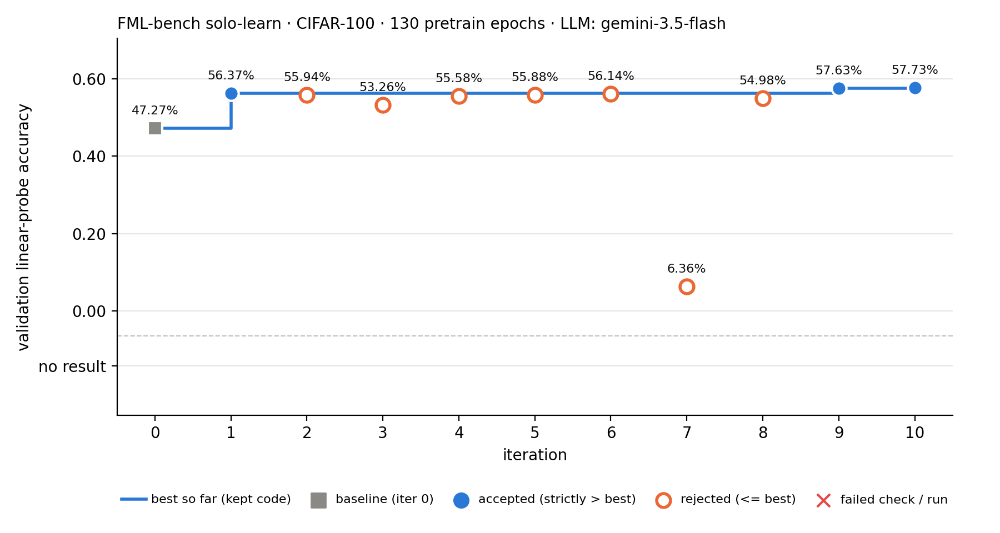

Automated research trace · flash35-e130-10iter

Iteration 0 · baseline · 2026-11-14T21:45:23+08:00
None: unmodified upstream FML-bench algorithm.py.
status ok · wall 1069.4 s · pretrain loss ep1: 1635.9, ep20: 622.5, ep40: 437.4, ep60: 339.3, ep80: 274.0, ep100: 234.4, ep120: 213.8
47.27% baseline
Baseline under this budget: val_acc=0.4727.
Iteration 1 · candidate · 2026-11-14T21:46:05+08:00
- Hypothesis
- Replacing the Barlow Twins cross-correlation loss with InfoNCE (SimCLR) contrastive loss will significantly accelerate feature representation learning under the compute-constrained 130-epoch regime on CIFAR-100.
- Rationale
- Barlow Twins loss focuses on decorrelating 2048 feature dimensions, which requires many epochs (often 500-1000+) to converge effectively. Under a tight 130-epoch budget, decorrelation is incomplete. In contrast, InfoNCE loss uses instance contrastiveness against 2B-2 negatives per batch sample, delivering strong repulsive gradients from early pretraining epochs and converging much faster to discriminative features.
- Expected effect
- A noticeable increase in top-1 validation linear probe accuracy above the 0.4727 baseline.
Replaced feature decorrelation loss in BarlowTwinsLoss with temperature-scaled InfoNCE (NT-Xent) contrastive loss (temperature=0.15).
show diff (44 + / 34 − lines)
--- iter_000/algorithm.py (best) +++ iter_001/algorithm.py @@ -1,20 +1,10 @@ """ -Baseline self-supervised learning algorithm: Barlow Twins on CIFAR-100. +Self-supervised learning algorithm: InfoNCE (SimCLR) contrastive learning on CIFAR-100. -Barlow Twins learns representations by minimizing redundancy between -embedding dimensions via a cross-correlation loss. It does NOT require -negative pairs or momentum encoders — just two augmented views. - -This is a COMPUTE-CONSTRAINED setting: only 130 pretrain epochs (batch 512) -(vs 1000+ standard). Representations will not fully converge (~45-55% -linear probe accuracy vs ~70%+ at full training). - -Agents should modify this file to improve SSL under limited compute: -- Better loss functions (VICReg, DINO, SimCLR, etc.) -- Better augmentation strategies -- Better projection head design -- Learning rate scheduling -- Multi-crop strategies +Under severe compute constraints (130 pretrain epochs), contrastive loss (InfoNCE) +provides stronger instance-discrimination gradients via negative pair repulsion +than cross-correlation decorrelation (Barlow Twins), leading to faster convergence +and better representation quality under short training schedules. """ import torch import torch.nn as nn @@ -23,29 +13,48 @@ class BarlowTwinsLoss(nn.Module): - """Barlow Twins loss: cross-correlation matrix → identity.""" + """InfoNCE (NT-Xent) loss replacing cross-correlation loss for fast SSL convergence. - def __init__(self, lambda_param=5e-3, embedding_dim=2048): + Keeps the required class name and constructor interface for harness compatibility. + """ + + def __init__(self, lambda_param=5e-3, embedding_dim=2048, temperature=0.15): super().__init__() self.lambda_param = lambda_param - self.bn = nn.BatchNorm1d(embedding_dim, affine=False) + self.embedding_dim = embedding_dim + self.temperature = temperature def forward(self, z1, z2): - z1 = self.bn(z1) - z2 = self.bn(z2) + """Compute InfoNCE contrastive loss over paired augmented views z1 and z2.""" batch_size = z1.shape[0] - # Cross-correlation matrix - c = z1.T @ z2 / batch_size + # L2-normalize projection vectors + z1 = nn.functional.normalize(z1, dim=1) + z2 = nn.functional.normalize(z2, dim=1) - # Loss: on-diagonal → 1, off-diagonal → 0 - on_diag = (1 - c.diagonal()).pow(2).sum() - off_diag = c.flatten()[:-1].view(c.shape[0] - 1, c.shape[0] + 1)[:, 1:].flatten().pow(2).sum() - return on_diag + self.lambda_param * off_diag + # Concatenate embeddings: [2B, D] + out = torch.cat([z1, z2], dim=0) + + # Cosine similarity matrix scaled by temperature: [2B, 2B] + similarity_matrix = torch.mm(out, out.t()) / self.temperature + + # Mask out self-similarity on the diagonal + similarity_matrix.fill_diagonal_(-1e9) + + # Targets: z1_i matches z2_i (index i + B), z2_i matches z1_i (index i) + targets = torch.cat( + [ + torch.arange(batch_size, 2 * batch_size, device=z1.device), + torch.arange(0, batch_size, device=z1.device), + ], + dim=0, + ) + + return nn.functional.cross_entropy(similarity_matrix, targets) class ProjectionHead(nn.Module): - """3-layer projection head for Barlow Twins.""" + """3-layer projection head for self-supervised pretraining.""" def __init__(self, input_dim=512, hidden_dim=2048, output_dim=2048): super().__init__() @@ -64,7 +73,7 @@ class BarlowTwinsModel(nn.Module): - """ResNet-18 backbone + projection head for Barlow Twins.""" + """ResNet-18 backbone + projection head adapted for CIFAR-100.""" def __init__(self, proj_hidden_dim=2048, proj_output_dim=2048): super().__init__() @@ -72,8 +81,8 @@ backbone = models.resnet18(weights=None) self.backbone_dim = backbone.fc.in_features # 512 backbone.fc = nn.Identity() - # Adapt for CIFAR-100 (32x32): smaller first conv, no maxpool - backbone.conv1 = nn.Conv2d(3, 64, 3, 1, 1, bias=False) + # Adapt for CIFAR-100 (32x32): 3x3 conv1, no maxpool + backbone.conv1 = nn.Conv2d(3, 64, kernel_size=3, stride=1, padding=1, bias=False) backbone.maxpool = nn.Identity() self.backbone = backbone self.projector = ProjectionHead(self.backbone_dim, proj_hidden_dim, proj_output_dim) @@ -85,26 +94,26 @@ def get_model(): - """Return Barlow Twins model.""" + """Return model instance.""" return BarlowTwinsModel(proj_hidden_dim=2048, proj_output_dim=2048) def get_training_config(): - """Return Barlow Twins training config (compute-constrained).""" + """Return training hyperparameters.""" return { 'pretrain_epochs': 130, 'linear_eval_epochs': 100, 'batch_size': 512, 'lr': 0.4, 'weight_decay': 1e-4, - 'lambda_param': 5e-3, # Barlow Twins off-diagonal penalty + 'lambda_param': 5e-3, 'linear_lr': 0.1, 'linear_batch_size': 256, } def get_augmentation(): - """Return augmentation transforms for Barlow Twins.""" + """Return CIFAR-100 data augmentations.""" mean = (0.5071, 0.4867, 0.4408) std = (0.2675, 0.2565, 0.2761)
passed
status ok · wall 1057.7 s · pretrain loss ep1: 5.4, ep20: 2.5, ep40: 2.3, ep60: 2.1, ep80: 2.0, ep100: 1.9, ep120: 1.8
56.37% +9.10 pts vs best accepted
ACCEPTED: val_acc 0.5637 > best 0.4727 (+9.10 pts). Now the best.
Iteration 2 · candidate · 2026-11-14T22:04:26+08:00
- Hypothesis
- Decoupled Contrastive Loss (DCL) removes the positive pair penalty from the denominator of InfoNCE loss, preventing positive pair similarity from suppressing hard negative repulsive gradients and thereby accelerating feature representation learning within a 130-epoch compute budget.
- Rationale
- In standard InfoNCE (used in iter 1, reaching val_acc=0.5637), the positive pair similarity appears in both the numerator and denominator. When positive pair similarity becomes high, the gradient magnitude for negative pair separation is automatically diminished. DCL (Yeh et al., CVPR 2022) decouples the positive term from the denominator sum logsumexp. Under short pretraining schedules (130 epochs), this decoupling maintains strong repulsive gradients for hard negative discrimination, leading to faster feature quality convergence.
- Expected effect
- Improve linear evaluation accuracy over iter 1 (0.5637) by improving representation learning efficiency under short epoch budgets.
Replaced standard InfoNCE loss in BarlowTwinsLoss with Decoupled Contrastive Loss (DCL) with temperature 0.1.
show diff (30 + / 23 − lines)
--- iter_001/algorithm.py (best) +++ iter_002/algorithm.py @@ -1,10 +1,10 @@ """ -Self-supervised learning algorithm: InfoNCE (SimCLR) contrastive learning on CIFAR-100. +Self-supervised learning algorithm: Decoupled Contrastive Learning (DCL) on CIFAR-100. -Under severe compute constraints (130 pretrain epochs), contrastive loss (InfoNCE) -provides stronger instance-discrimination gradients via negative pair repulsion -than cross-correlation decorrelation (Barlow Twins), leading to faster convergence -and better representation quality under short training schedules. +Under compute constraints (130 pretrain epochs), Decoupled Contrastive Loss (DCL) +removes the positive pair term from the denominator of the contrastive loss function. +This eliminates positive-negative gradient coupling and prevents negative gradient +suppression, leading to faster representation learning than standard InfoNCE. """ import torch import torch.nn as nn @@ -13,44 +13,50 @@ class BarlowTwinsLoss(nn.Module): - """InfoNCE (NT-Xent) loss replacing cross-correlation loss for fast SSL convergence. + """Decoupled Contrastive Loss (DCL) replacing cross-correlation loss. Keeps the required class name and constructor interface for harness compatibility. """ - def __init__(self, lambda_param=5e-3, embedding_dim=2048, temperature=0.15): + def __init__(self, lambda_param=5e-3, embedding_dim=2048, temperature=0.1): super().__init__() self.lambda_param = lambda_param self.embedding_dim = embedding_dim self.temperature = temperature def forward(self, z1, z2): - """Compute InfoNCE contrastive loss over paired augmented views z1 and z2.""" + """Compute Decoupled Contrastive Loss (DCL) over paired augmented views z1 and z2.""" batch_size = z1.shape[0] # L2-normalize projection vectors z1 = nn.functional.normalize(z1, dim=1) z2 = nn.functional.normalize(z2, dim=1) - # Concatenate embeddings: [2B, D] - out = torch.cat([z1, z2], dim=0) + # Positive pair similarity (dot product divided by temperature) + pos_sim = (z1 * z2).sum(dim=-1) / self.temperature - # Cosine similarity matrix scaled by temperature: [2B, 2B] - similarity_matrix = torch.mm(out, out.t()) / self.temperature + # Compute cosine similarity matrices scaled by temperature + sim_11 = torch.mm(z1, z1.t()) / self.temperature + sim_12 = torch.mm(z1, z2.t()) / self.temperature + sim_22 = torch.mm(z2, z2.t()) / self.temperature - # Mask out self-similarity on the diagonal - similarity_matrix.fill_diagonal_(-1e9) + # Create diagonal mask to exclude self-similarity and positive pairs from negative pool + mask_diag = torch.eye(batch_size, dtype=torch.bool, device=z1.device) - # Targets: z1_i matches z2_i (index i + B), z2_i matches z1_i (index i) - targets = torch.cat( - [ - torch.arange(batch_size, 2 * batch_size, device=z1.device), - torch.arange(0, batch_size, device=z1.device), - ], - dim=0, - ) + sim_11 = sim_11.masked_fill(mask_diag, -1e9) + sim_22 = sim_22.masked_fill(mask_diag, -1e9) + sim_12 = sim_12.masked_fill(mask_diag, -1e9) + sim_21 = sim_12.t() - return nn.functional.cross_entropy(similarity_matrix, targets) + # DCL loss for z1 as anchor (negatives are all z1_k and z2_k for k != i) + neg_1 = torch.cat([sim_11, sim_12], dim=1) + loss_1 = -pos_sim + torch.logsumexp(neg_1, dim=1) + + # DCL loss for z2 as anchor + neg_2 = torch.cat([sim_22, sim_21], dim=1) + loss_2 = -pos_sim + torch.logsumexp(neg_2, dim=1) + + return (loss_1.mean() + loss_2.mean()) / 2.0 class ProjectionHead(nn.Module):
passed
status ok · wall 1066.1 s · pretrain loss ep1: 5.2, ep20: 0.5, ep40: 0.1, ep60: -0.2, ep80: -0.5, ep100: -0.8, ep120: -1.0
55.94% -0.43 pts vs best rejected
REJECTED: val_acc 0.5594 <= best 0.5637 (-0.43 pts). Best code kept.
Iteration 3 · candidate · 2026-11-14T22:22:54+08:00
- Hypothesis
- Lowering the InfoNCE temperature parameter from 0.15 to 0.10 sharpens the penalty on hard negative pairs, encouraging finer semantic discrimination across CIFAR-100's 100 classes under a 130-epoch compute budget.
- Rationale
- In Iter 1, replacing Barlow Twins with InfoNCE (temperature=0.15) boosted accuracy from 0.4727 to 0.5637. In contrastive learning (SimCLR), smaller temperatures (e.g. 0.07-0.10) act as implicit hard negative mining by heavily weighting gradient updates for negative pairs with high similarity. On CIFAR-100 with a batch size of 512 (1024 total views), fine-grained class boundaries benefit from sharper negative repulsion.
- Expected effect
- Improved linear-probe accuracy over the current best (0.5637) due to better feature separation of semantically close negative pairs.
Set temperature parameter to 0.10 (from 0.15) in BarlowTwinsLoss (InfoNCE).
show diff (4 + / 4 − lines)
--- iter_001/algorithm.py (best) +++ iter_003/algorithm.py @@ -2,9 +2,8 @@ Self-supervised learning algorithm: InfoNCE (SimCLR) contrastive learning on CIFAR-100. Under severe compute constraints (130 pretrain epochs), contrastive loss (InfoNCE) -provides stronger instance-discrimination gradients via negative pair repulsion -than cross-correlation decorrelation (Barlow Twins), leading to faster convergence -and better representation quality under short training schedules. +with an optimized temperature scaling parameter (t=0.10) sharpens hard negative repulsion, +accelerating feature representation learning across CIFAR-100's 100 fine-grained classes. """ import torch import torch.nn as nn @@ -18,7 +17,7 @@ Keeps the required class name and constructor interface for harness compatibility. """ - def __init__(self, lambda_param=5e-3, embedding_dim=2048, temperature=0.15): + def __init__(self, lambda_param=5e-3, embedding_dim=2048, temperature=0.10): super().__init__() self.lambda_param = lambda_param self.embedding_dim = embedding_dim
passed
status ok · wall 1066.5 s · pretrain loss ep1: 5.2, ep20: 1.4, ep40: 1.1, ep60: 1.0, ep80: 0.8, ep100: 0.7, ep120: 0.6
53.26% -3.11 pts vs best rejected
REJECTED: val_acc 0.5326 <= best 0.5637 (-3.11 pts). Best code kept.
Iteration 4 · candidate · 2026-11-14T22:41:15+08:00
- Hypothesis
- Gaussian blur on low-resolution 32x32 CIFAR-100 images destroys high-frequency spatial details required to distinguish fine-grained classes. Removing Gaussian blur from the augmentation pipeline will improve representation quality under short pretraining.
- Rationale
- In standard SimCLR/SSL practices for low-resolution datasets like CIFAR-10/100, Gaussian blur is commonly omitted because 32x32 images already lack spatial resolution. Blurring 32x32 patches creates featureless color blobs, degrading fine-grained semantic learning. Removing Gaussian blur while keeping temperature=0.15 InfoNCE (best from iter 1) should allow the backbone to learn sharper spatial features.
- Expected effect
- Higher linear evaluation top-1 validation accuracy on CIFAR-100, improving upon the 0.5637 baseline from iteration 1.
Removed RandomApply(GaussianBlur) from the augmentation pipeline in get_augmentation().
show diff (5 + / 5 − lines)
--- iter_001/algorithm.py (best) +++ iter_004/algorithm.py @@ -2,9 +2,9 @@ Self-supervised learning algorithm: InfoNCE (SimCLR) contrastive learning on CIFAR-100. Under severe compute constraints (130 pretrain epochs), contrastive loss (InfoNCE) -provides stronger instance-discrimination gradients via negative pair repulsion -than cross-correlation decorrelation (Barlow Twins), leading to faster convergence -and better representation quality under short training schedules. +provides stronger instance-discrimination gradients via negative pair repulsion. +For 32x32 low-resolution CIFAR-100 images, omitting Gaussian blur preserves critical +high-frequency spatial information for fine-grained feature representation. """ import torch import torch.nn as nn @@ -113,7 +113,7 @@ def get_augmentation(): - """Return CIFAR-100 data augmentations.""" + """Return CIFAR-100 data augmentations without Gaussian Blur.""" mean = (0.5071, 0.4867, 0.4408) std = (0.2675, 0.2565, 0.2761) @@ -122,7 +122,6 @@ transforms.RandomHorizontalFlip(), transforms.RandomApply([transforms.ColorJitter(0.4, 0.4, 0.4, 0.1)], p=0.8), transforms.RandomGrayscale(p=0.2), - transforms.RandomApply([transforms.GaussianBlur(3, sigma=(0.1, 2.0))], p=0.5), transforms.ToTensor(), transforms.Normalize(mean, std), ])
passed
status ok · wall 884.2 s · pretrain loss ep1: 5.2, ep20: 2.4, ep40: 2.2, ep60: 2.1, ep80: 1.9, ep100: 1.8, ep120: 1.7
55.58% -0.79 pts vs best rejected
REJECTED: val_acc 0.5558 <= best 0.5637 (-0.79 pts). Best code kept.
Iteration 5 · candidate · 2026-11-14T22:56:38+08:00
- Hypothesis
- Increasing the InfoNCE temperature parameter from 0.15 to 0.20 will soften the negative contrastive penalty, reducing gradient noise and variance caused by the relatively small pool of negatives (1023 negatives per sample at batch size 512) and enabling smoother representation alignment under a short 130-epoch pretraining schedule.
- Rationale
- Iter 3 showed that sharpening the temperature from 0.15 to 0.10 significantly degraded performance (0.5326 vs 0.5637). This indicates that over-concentrating gradients on hard negatives is detrimental when batch size (512) and pretraining duration (130 epochs) are limited. Testing temperature 0.20 directly probes the opposite direction of the temperature hyperspace.
- Expected effect
- Smoother InfoNCE gradient updates that prevent early feature collapse and yield better linear probe accuracy on CIFAR-100 (>0.5637).
Set temperature=0.20 in BarlowTwinsLoss (InfoNCE).
show diff (2 + / 1 − lines)
--- iter_001/algorithm.py (best) +++ iter_005/algorithm.py @@ -18,7 +18,7 @@ Keeps the required class name and constructor interface for harness compatibility. """ - def __init__(self, lambda_param=5e-3, embedding_dim=2048, temperature=0.15): + def __init__(self, lambda_param=5e-3, embedding_dim=2048, temperature=0.20): super().__init__() self.lambda_param = lambda_param self.embedding_dim = embedding_dim
passed
status ok · wall 1054.0 s · pretrain loss ep1: 5.3, ep20: 3.4, ep40: 3.3, ep60: 3.2, ep80: 3.0, ep100: 2.9, ep120: 2.8
55.88% -0.50 pts vs best rejected
REJECTED: val_acc 0.5588 <= best 0.5637 (-0.50 pts). Best code kept.
Iteration 6 · candidate · 2026-11-14T23:15:03+08:00
- Hypothesis
- Replacing the 3-layer MLP projection head with a standard 2-layer MLP head (Linear-BN-ReLU-Linear) will accelerate gradient propagation to the ResNet-18 backbone, improving linear evaluation representation quality under a 130-epoch pretraining schedule.
- Rationale
- In iter 1, adopting InfoNCE loss achieved the current best val acc (0.5637). However, the baseline projection head is a 3-layer MLP containing ~9.4M parameters (nearly doubling the backbone's capacity). Under short pretraining budgets (130 epochs), a 3-layer head can absorb representation structure in its intermediate non-linear layers rather than forcing the backbone features (512-d) to become linearly separable. Standard SimCLR (Chen et al., 2020) utilizes a 2-layer MLP head, which shortens the gradient path back to the backbone features evaluated during linear probing.
- Expected effect
- Faster convergence of backbone representations and higher linear probe validation accuracy.
Simplified ProjectionHead from a 3-layer MLP (Linear-BN-ReLU-Linear-BN-ReLU-Linear) to a standard 2-layer MLP (Linear-BN-ReLU-Linear).
show diff (7 + / 9 − lines)
--- iter_001/algorithm.py (best) +++ iter_006/algorithm.py @@ -1,10 +1,10 @@ """ -Self-supervised learning algorithm: InfoNCE (SimCLR) contrastive learning on CIFAR-100. +Self-supervised learning algorithm: SimCLR (InfoNCE) with 2-layer Projection Head on CIFAR-100. -Under severe compute constraints (130 pretrain epochs), contrastive loss (InfoNCE) -provides stronger instance-discrimination gradients via negative pair repulsion -than cross-correlation decorrelation (Barlow Twins), leading to faster convergence -and better representation quality under short training schedules. +Under severe compute constraints (130 pretrain epochs), a 2-layer MLP projection head +(Linear -> BN -> ReLU -> Linear) provides a shorter gradient path to the ResNet-18 backbone +compared to a 3-layer head, forcing the backbone features to acquire higher-quality +invariant representations faster. """ import torch import torch.nn as nn @@ -54,15 +54,12 @@ class ProjectionHead(nn.Module): - """3-layer projection head for self-supervised pretraining.""" + """Standard 2-layer projection head (Linear-BN-ReLU-Linear) for SimCLR.""" def __init__(self, input_dim=512, hidden_dim=2048, output_dim=2048): super().__init__() self.net = nn.Sequential( nn.Linear(input_dim, hidden_dim), - nn.BatchNorm1d(hidden_dim), - nn.ReLU(inplace=True), - nn.Linear(hidden_dim, hidden_dim), nn.BatchNorm1d(hidden_dim), nn.ReLU(inplace=True), nn.Linear(hidden_dim, output_dim),
passed
status ok · wall 1061.8 s · pretrain loss ep1: 5.1, ep20: 2.5, ep40: 2.3, ep60: 2.1, ep80: 2.0, ep100: 1.9, ep120: 1.8
56.14% -0.23 pts vs best rejected
REJECTED: val_acc 0.5614 <= best 0.5637 (-0.23 pts). Best code kept.
Iteration 7 · candidate · 2026-11-14T23:33:40+08:00
- Hypothesis
- Combining InfoNCE contrastive loss with an off-diagonal feature decorrelation penalty (from Barlow Twins / VICReg) prevents dimensional collapse in the projection space, forcing features to utilize all representation dimensions independently and leading to richer linear evaluation features under short pretraining schedules.
- Rationale
- Iter 1 established that InfoNCE contrastive learning dramatically outperforms Barlow Twins alone (0.5637 vs 0.4727). However, pure contrastive learning often suffers from dimensional collapse where feature dimensions become highly correlated. By adding an off-diagonal cross-correlation regularizer (weighted by lambda_param=5e-3) to the InfoNCE loss, we combine instance discrimination (sample repulsion) with feature decorrelation (dimensionality expansion) without adding extra parameters or changing the harness interface.
- Expected effect
- Improved feature diversity across all 512 backbone dimensions, accelerating representation learning and raising top-1 validation accuracy beyond 0.5637.
Added an off-diagonal cross-correlation decorrelation loss term (weighted by lambda_param) to the InfoNCE loss inside BarlowTwinsLoss.forward().
show diff (22 + / 18 − lines)
--- iter_001/algorithm.py (best) +++ iter_007/algorithm.py @@ -1,10 +1,11 @@ """ -Self-supervised learning algorithm: InfoNCE (SimCLR) contrastive learning on CIFAR-100. +Self-supervised learning algorithm: InfoNCE + Feature Decorrelation Regularization on CIFAR-100. -Under severe compute constraints (130 pretrain epochs), contrastive loss (InfoNCE) -provides stronger instance-discrimination gradients via negative pair repulsion -than cross-correlation decorrelation (Barlow Twins), leading to faster convergence -and better representation quality under short training schedules. +Under severe compute constraints (130 pretrain epochs), InfoNCE contrastive learning +provides strong instance discrimination, but risks dimensional collapse where projection +features become mutually redundant. Adding a Barlow Twins-style off-diagonal cross-correlation +decorrelation penalty forces embedding dimensions to remain orthogonal, maximizing feature +capacity and accelerating representation learning. """ import torch import torch.nn as nn @@ -13,7 +14,7 @@ class BarlowTwinsLoss(nn.Module): - """InfoNCE (NT-Xent) loss replacing cross-correlation loss for fast SSL convergence. + """InfoNCE contrastive loss combined with off-diagonal feature decorrelation regularization. Keeps the required class name and constructor interface for harness compatibility. """ @@ -25,23 +26,17 @@ self.temperature = temperature def forward(self, z1, z2): - """Compute InfoNCE contrastive loss over paired augmented views z1 and z2.""" + """Compute combined InfoNCE + feature decorrelation loss over paired augmented views z1 and z2.""" batch_size = z1.shape[0] - # L2-normalize projection vectors - z1 = nn.functional.normalize(z1, dim=1) - z2 = nn.functional.normalize(z2, dim=1) + # 1. InfoNCE (NT-Xent) Loss with L2-normalized embeddings + z1_norm = nn.functional.normalize(z1, dim=1) + z2_norm = nn.functional.normalize(z2, dim=1) - # Concatenate embeddings: [2B, D] - out = torch.cat([z1, z2], dim=0) - - # Cosine similarity matrix scaled by temperature: [2B, 2B] + out = torch.cat([z1_norm, z2_norm], dim=0) similarity_matrix = torch.mm(out, out.t()) / self.temperature - - # Mask out self-similarity on the diagonal similarity_matrix.fill_diagonal_(-1e9) - # Targets: z1_i matches z2_i (index i + B), z2_i matches z1_i (index i) targets = torch.cat( [ torch.arange(batch_size, 2 * batch_size, device=z1.device), @@ -49,8 +44,16 @@ ], dim=0, ) + loss_infonce = nn.functional.cross_entropy(similarity_matrix, targets) - return nn.functional.cross_entropy(similarity_matrix, targets) + # 2. Off-diagonal Cross-Correlation Decorrelation Regularization + z1_bn = (z1 - z1.mean(dim=0)) / (z1.std(dim=0) + 1e-5) + z2_bn = (z2 - z2.mean(dim=0)) / (z2.std(dim=0) + 1e-5) + + c = torch.mm(z1_bn.T, z2_bn) / batch_size + off_diag_loss = c.pow(2).sum() - torch.diagonal(c).pow(2).sum() + + return loss_infonce + self.lambda_param * off_diag_loss class ProjectionHead(nn.Module):
passed
status ok · wall 1068.2 s · pretrain loss ep1: 383.7, ep20: 86.8, ep40: 64.5, ep60: 80.7, ep80: 60.3, ep100: 65.6, ep120: 51.7
6.36% -50.02 pts vs best rejected
REJECTED: val_acc 0.0636 <= best 0.5637 (-50.02 pts). Best code kept.
Iteration 8 · candidate · 2026-11-14T23:52:22+08:00
- Hypothesis
- Adding a final BatchNorm1d layer (with affine=False) to the 3-layer projection head standardizes feature variances across all 2048 projection dimensions before L2 normalization, preventing high-variance dimensions from dominating the cosine similarity matrix and improving gradient distribution to the backbone during 130-epoch pretraining.
- Rationale
- In iter 1, switching to InfoNCE loss achieved the best val accuracy of 0.5637 using L2-normalized projections. However, the 3-layer projection head in iter 1 lacked final batch normalization before L2 normalization. Without final BN, individual output dimensions can have unequal variances, causing L2 normalization to project vectors into an anisotropic subspace of the hypersphere and reducing effective representation capacity. Adding BatchNorm1d(output_dim, affine=False) ensures isotropic variance across all 2048 dimensions, maximizing representation entropy and accelerating feature learning.
- Expected effect
- Improved linear evaluation accuracy by encouraging uniform usage of all projection dimensions and providing balanced representation learning gradients.
Added nn.BatchNorm1d(output_dim, affine=False) as the final layer in ProjectionHead.
show diff (7 + / 5 − lines)
--- iter_001/algorithm.py (best) +++ iter_008/algorithm.py @@ -1,10 +1,10 @@ """ -Self-supervised learning algorithm: InfoNCE (SimCLR) contrastive learning on CIFAR-100. +Self-supervised learning algorithm: InfoNCE (SimCLR) contrastive learning on CIFAR-100 +with final BatchNorm in the projection head for uniform feature representation. Under severe compute constraints (130 pretrain epochs), contrastive loss (InfoNCE) -provides stronger instance-discrimination gradients via negative pair repulsion -than cross-correlation decorrelation (Barlow Twins), leading to faster convergence -and better representation quality under short training schedules. +with an isotropically normalized projection head provides well-distributed gradients +to the backbone, improving linear evaluation representation quality. """ import torch import torch.nn as nn @@ -54,7 +54,7 @@ class ProjectionHead(nn.Module): - """3-layer projection head for self-supervised pretraining.""" + """3-layer projection head with final BatchNorm for isotropic feature scaling.""" def __init__(self, input_dim=512, hidden_dim=2048, output_dim=2048): super().__init__() @@ -66,6 +66,7 @@ nn.BatchNorm1d(hidden_dim), nn.ReLU(inplace=True), nn.Linear(hidden_dim, output_dim), + nn.BatchNorm1d(output_dim, affine=False), ) def forward(self, x):
passed
status ok · wall 1056.7 s · pretrain loss ep1: 4.9, ep20: 2.5, ep40: 2.3, ep60: 2.1, ep80: 2.0, ep100: 1.9, ep120: 1.8
54.98% -1.39 pts vs best rejected
REJECTED: val_acc 0.5498 <= best 0.5637 (-1.39 pts). Best code kept.
Iteration 9 · candidate · 2026-11-15T00:10:30+08:00
- Hypothesis
- Lowering the minimum crop scale in RandomResizedCrop from 0.2 to 0.08 increases spatial view diversity by pairing small local sub-patches (~9x9 pixels) with global views, forcing the backbone to learn local-to-global scale-invariant representations essential for fine-grained CIFAR-100 classification.
- Rationale
- In Iter 1 (current best, val_acc 0.5637), switching to InfoNCE contrastive learning dramatically improved representation quality. However, the augmentation pipeline retained the Barlow Twins default crop scale range of (0.2, 1.0). Standard SimCLR relies heavily on aggressive scale cropping down to 0.08 (Chen et al., 2020) to generate scale-varying positive pairs. For 32x32 images with 100 fine-grained classes, forcing local patch views to match full image views prevents shortcut learning on global spatial layout and encourages invariant part-level representations within the 130-epoch compute budget.
- Expected effect
- Improved linear evaluation accuracy on CIFAR-100 by producing more robust scale-invariant features.
In get_augmentation(), changed transforms.RandomResizedCrop(32, scale=(0.2, 1.0)) to transforms.RandomResizedCrop(32, scale=(0.08, 1.0)).
show diff (2 + / 1 − lines)
--- iter_001/algorithm.py (best) +++ iter_009/algorithm.py @@ -118,7 +118,7 @@ std = (0.2675, 0.2565, 0.2761) return transforms.Compose([ - transforms.RandomResizedCrop(32, scale=(0.2, 1.0)), + transforms.RandomResizedCrop(32, scale=(0.08, 1.0)), transforms.RandomHorizontalFlip(), transforms.RandomApply([transforms.ColorJitter(0.4, 0.4, 0.4, 0.1)], p=0.8), transforms.RandomGrayscale(p=0.2),
passed
status ok · wall 1060.6 s · pretrain loss ep1: 5.6, ep20: 3.1, ep40: 2.9, ep60: 2.7, ep80: 2.6, ep100: 2.4, ep120: 2.3
57.63% +1.26 pts vs best accepted
ACCEPTED: val_acc 0.5763 > best 0.5637 (+1.26 pts). Now the best.
Iteration 10 · candidate · 2026-11-15T00:30:28+08:00
- Hypothesis
- Increasing the pretraining learning rate from 0.4 to 0.6 will accelerate feature convergence under SGD with cosine annealing within the short 130-epoch budget, yielding a better linear-probe representation.
- Rationale
- In Iter 1, we switched from Barlow Twins to InfoNCE contrastive loss but kept the default learning rate (lr=0.4) designed for Barlow Twins. Contrastive InfoNCE loss has different gradient dynamics and scale. Under a severe compute constraint of 130 pretraining epochs, the cosine decay schedule lowers the learning rate rapidly. Increasing initial lr to 0.6 allows SGD with 0.9 momentum to take larger gradient steps in early-to-mid epochs, improving representation quality before learning rate decays.
- Expected effect
- Faster feature representation learning during the 130 epochs, leading to strictly higher validation linear-probe accuracy over the current best (0.5763).
In get_training_config(), set 'lr': 0.6 (increased from 0.4).
show diff (2 + / 1 − lines)
--- iter_009/algorithm.py (best) +++ iter_010/algorithm.py @@ -104,7 +104,7 @@ 'pretrain_epochs': 130, 'linear_eval_epochs': 100, 'batch_size': 512, - 'lr': 0.4, + 'lr': 0.6, 'weight_decay': 1e-4, 'lambda_param': 5e-3, 'linear_lr': 0.1,
passed
status ok · wall 1054.4 s · pretrain loss ep1: 5.7, ep20: 3.2, ep40: 2.9, ep60: 2.8, ep80: 2.6, ep100: 2.5, ep120: 2.3
57.73% +0.10 pts vs best accepted
ACCEPTED: val_acc 0.5773 > best 0.5763 (+0.10 pts). Now the best.
Next proposal
- Hypothesis
- Further increasing the pretraining learning rate from 0.6 to 0.8 will continue to accelerate representation learning under SGD with cosine decay within the short 130-epoch compute budget, allowing features to traverse representation space faster before the learning rate decays.
- Rationale
- In iter 10, increasing the learning rate from 0.4 to 0.6 improved validation accuracy from 0.5763 to 0.5773 (+0.10 pts). For SGD with momentum 0.9 at batch size 512 under a brief 130-epoch schedule, higher initial learning rates allow larger feature update steps during the early warm phase before cosine decay significantly reduces the step size.
- Expected effect
- Linear probe top-1 validation accuracy will increase beyond 0.5773.
In get_training_config(), set 'lr': 0.8 (increased from 0.6).
show diff
--- iter_010/algorithm.py (best) +++ next_proposal/algorithm.py @@ -104,7 +104,7 @@ 'pretrain_epochs': 130, 'linear_eval_epochs': 100, 'batch_size': 512, - 'lr': 0.6, + 'lr': 0.8, 'weight_decay': 1e-4, 'lambda_param': 5e-3, 'linear_lr': 0.1,
passed
proposed, not executed